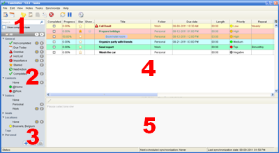

Tasks

- 1. Quick search
-
You can filter your tasks by title by filling in this field.
- 2. Searcher list
-
The searcher allows you to sort and filter your tasks.
Only the general & personal searchers are editable.
You can copy-paste general & personal searchers.
- 3. Add, remove and edit personal searchers
-
These buttons allows you to add, remove and edit searchers.
- 4. Task table
-
This table shows you the tasks contained in the selected searcher.
You can edit your tasks, create sub-tasks with drag-and-drop and copy-paste tasks.
- 5. Task note
-
In this editor, you can enter the note of the selected task.
- Copy paste:
-
You can copy paste tasks. Select a task, copy it and finally paste it.
- Export to Word, Excel, ...:
-
Copy the tasks your want to export (select + click on copy), then paste in your preferred software.
- Subtask (drag and drop):
-
You can create subtasks by drag and drop. Select a child task, drag it and finally drop it onto another task.
In order to change a subtask into a root task, select it, drag it and finally drop it between two other tasks.